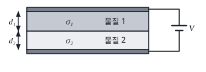
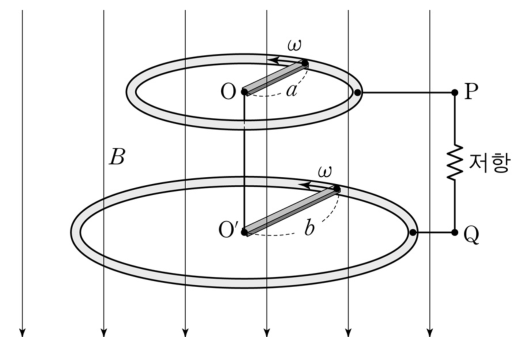
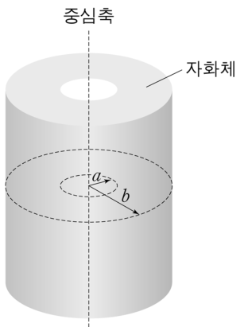
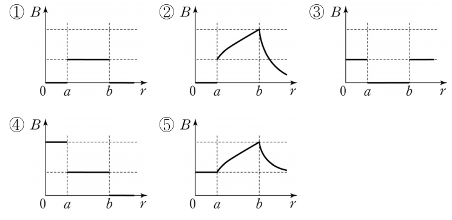
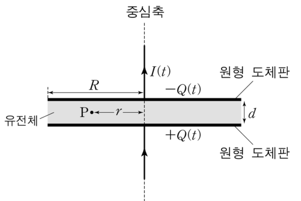
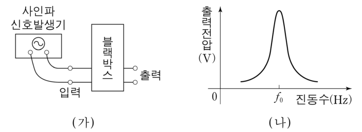
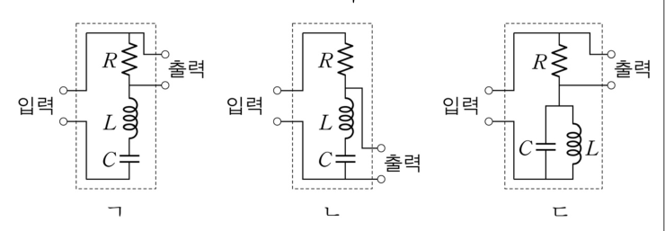

전자기 객관식 5문항 — 정상 전류·운동 기전력·자화체의 자기장·변위 전류·교류 공명Steady current in layered media · motional emf of rotating rods · magnetized hollow cylinder · displacement current & Poynting · RLC resonance
그림은 면적이 같은 두 개의 평행한 원형 도체판 사이에 전기 전도도 \(\sigma_1\), 두께 \(d_1\)인 물질 1과 전기 전도도 \(\sigma_2\), 두께 \(d_2\)인 물질 2가 각각 채워져 있는 것을 나타낸 것이다. 두 도체판 사이의 전압은 \(V\)이다.

전류가 정상상태로 흐를 때, 도체판 사이의 전류밀도 크기는? (단, 두 물질은 모두 균일하고 등방적이며 선형적이고, 가장자리 효과는 무시한다.)
그림과 같이 길이가 각각 \(a\), \(b\)인 두 도체 막대가 두 원형 도체 고리와 접촉하며, 두 고리를 수직으로 통과하는 크기가 \(B\)인 균일한 자기장 속에서 두 고리의 중심 O, O′을 중심으로 회전한다. 두 막대의 각속도의 방향은 같고, 크기는 모두 \(\omega\)로 일정하다. O, O′은 도선으로 연결되어 있고, 두 고리는 저항과 도선으로 연결되어 회로를 형성하며, 저항 양단의 점 P, Q에서 전위는 각각 \(V_{\rm P}\), \(V_{\rm Q}\)이다.

\((V_{\rm P}-V_{\rm Q})\)는? (단, 두 고리는 고정되어 있으며, 막대와 고리의 굵기는 무시한다.)
그림은 내부와 외부 반지름이 각각 \(a\), \(b\,(a\lt b)\)인 무한히 길고 속이 빈 원통형 자화체를 나타낸 것이며, 자화체의 자화(magnetization)의 방향은 원통의 중심축과 나란하고 크기는 일정하다.


자화체의 중심축으로부터 거리 \(r\)에 따른 자기장의 크기 \(B\)를 가장 적절히 나타낸 것은? (선지는 위 그래프 ①~⑤)
그림은 시간에 따라 변하는 전류가 흐르는 도선이 연결된 원형 도체판으로 이루어진 평행판 축전기에서, 시간 \(t\)일 때의 전류 \(I(t)\)와 도체판의 전하량 \(Q(t)\)를 나타낸 것이다. 두 도체판의 반지름은 \(R\)로 같고 중심축이 일치한다. 두 도체판 사이의 간격은 \(d(\ll R)\)이고 유전체로 채워져 있다. 점 P는 중심축으로부터 거리 \(r(\lt R)\)인 두 도체판 사이의 가운데 지점이다.

시간 \(t\)일 때, 이에 대한 설명으로 옳은 것만을 <보기>에서 있는 대로 고른 것은? (단, 유전체는 균일하고 등방적이며 선형적이고, 유전율, 투자율은 각각 \(\varepsilon\), \(\mu\)이며, 가장자리 효과는 무시한다.)
- ㄱ. P에서 전기 변위(electric displacement) \(\vec D\)의 크기는 \(\dfrac{Q(t)}{\pi r^2}\)이다.
- ㄴ. P에서 자기 세기(magnetic intensity) \(\vec H\)의 크기는 \(\dfrac{rI(t)}{2\pi R^2}\)이다.
- ㄷ. 반지름 \(R\)인 유전체 옆면 전체를 통과하는 단위 시간당 전자기 에너지의 흐름은 \(\dfrac{I(t)Q(t)}{2\pi^2\varepsilon R^3}\)이다.
그림 (가)는 블랙박스에 사인파(sine wave) 신호발생기가 연결된 것을 나타낸 것이다. 블랙박스 안에는 저항 \(R\)인 저항기, 전기 용량 \(C\)인 축전기, 자체 인덕턴스 \(L\)인 코일로 이루어진 회로가 들어 있다. 그림 (나)는 신호발생기의 진동수를 변화시키면서 블랙박스의 출력전압을 측정한 결과를 나타낸 것이다. (나)에서 \(f_0\)은 \(\dfrac{1}{2\pi\sqrt{LC}}\)이다.


블랙박스 안의 전기회로로 옳은 것만을 <보기>에서 있는 대로 고른 것은? (단, 블랙박스의 입력전압은 진동수에 관계없이 항상 일정하며, 입력 및 출력전압은 실효전압이다.)
- ㄱ. 직렬 R–L–C, 출력 = R 양단 (위 보기 그림 ㄱ)
- ㄴ. 직렬 R–L–C, 출력 = L–C 양단 (보기 그림 ㄴ)
- ㄷ. R과 병렬 L‖C의 직렬, 출력 = R 양단 (보기 그림 ㄷ)
정답문항별 정답 (AI 풀이 ↔ 정답표)
| 문항 | AI 풀이 | 정답표 | 배점 | 판정 | 핵심 아이디어 |
|---|---|---|---|---|---|
| 21 | ① | ① | 1.5 | 일치 ✓ | 직렬 연결: \(J\)가 같고 \(V=J\left(\dfrac{d_1}{\sigma_1}+\dfrac{d_2}{\sigma_2}\right)\). |
| 22 | ② | ② | 2.0 | 일치 ✓ | 각 막대 \(V_{\rm 중심}-V_{\rm 고리}=\tfrac12\omega BL^2\). O = O′ 전위 → \(V_{\rm P}-V_{\rm Q}=-\tfrac12\omega Ba^2+\tfrac12\omega Bb^2\). |
| 23 | ① | ① | 2.0 | 일치 ✓ | 바깥면 \(K=M\) → \(r\lt b\)에 \(\mu_0M\), 안쪽면 \(K=M\)(반대) → \(r\lt a\)에 \(-\mu_0M\). 합: \(a\lt r\lt b\)에서만 \(\mu_0M\). |
| 24 | ② | ② | 2.0 | 일치 ✓ | \(D=\dfrac{Q}{\pi R^2}\)(ㄱ ✗), \(H\cdot2\pi r=I\dfrac{r^2}{R^2}\)(ㄴ ✓), \(S=EH=\dfrac{Q}{\varepsilon\pi R^2}\dfrac{I}{2\pi R}=\dfrac{IQ}{2\pi^2\varepsilon R^3}\)는 단위 넓이당 — 전체는 \(\times2\pi Rd=\dfrac{QId}{\pi\varepsilon R^2}\) (ㄷ ✗). |
| 25 | ① | ① | 2.0 | 일치 ✓ | ㄱ: f₀에서 전류 최대 → R 전압 최대(봉우리). ㄴ: f₀에서 LC 양단 전압 0. ㄷ: f₀에서 병렬 LC가 전류 차단 → R 전압 0. |
1문항별 풀이 — 선지·보기 분석 포함
21두 물질층을 흐르는 정상 전류 1.5점
그림은 면적이 같은 두 개의 평행한 원형 도체판 사이에 전기 전도도 \(\sigma_1\), 두께 \(d_1\)인 물질 1과 전기 전도도 \(\sigma_2\), 두께 \(d_2\)인 물질 2가 각각 채워져 있는 것을 나타낸 것이다. 두 도체판 사이의 전압은 \(V\)이다.
전류가 정상상태로 흐를 때, 도체판 사이의 전류밀도 크기는? (단, 두 물질은 모두 균일하고 등방적이며 선형적이고, 가장자리 효과는 무시한다.)
1직렬 조건
| 선지·보기 | 해설 |
|---|---|
| ① | 직렬 저항 합 ✓ |
| ③ | 분모의 σ를 바꿔 씀 |
| ④⑤ | 병렬 연결(전도도의 합)로 착각 — 층이 전류 방향으로 쌓였으므로 직렬 |
| ② | 차원이 맞지 않음 |
22회전하는 두 막대의 운동 기전력 2.0점
그림과 같이 길이가 각각 \(a\), \(b\)인 두 도체 막대가 두 원형 도체 고리와 접촉하며, 두 고리를 수직으로 통과하는 크기가 \(B\)인 균일한 자기장 속에서 두 고리의 중심 O, O′을 중심으로 회전한다. 두 막대의 각속도의 방향은 같고, 크기는 모두 \(\omega\)로 일정하다. O, O′은 도선으로 연결되어 있고, 두 고리는 저항과 도선으로 연결되어 회로를 형성하며, 저항 양단의 점 P, Q에서 전위는 각각 \(V_{\rm P}\), \(V_{\rm Q}\)이다.
\((V_{\rm P}-V_{\rm Q})\)는? (단, 두 고리는 고정되어 있으며, 막대와 고리의 굵기는 무시한다.)
1한 막대의 기전력
\(\vec v=\omega r\hat\phi\), \(\vec B=-B\hat z\) → \(\vec v\times\vec B=-\omega rB\,\hat r\) (중심 쪽). \(\mathcal E=\int_0^L\omega Br\,dr=\tfrac12\omega BL^2\), 중심이 고전위.
2전위차
\(V_{\rm P}=V_{\rm O}-\tfrac12\omega Ba^2\), \(V_{\rm Q}=V_{\rm O'}-\tfrac12\omega Bb^2\), \(V_{\rm O}=V_{\rm O'}\) → \(V_{\rm P}-V_{\rm Q}=\tfrac12\omega B(b^2-a^2)\). (막대·도선의 저항을 무시하므로 회로에 전류가 흘러도 같다.)
| 선지·보기 | 해설 |
|---|---|
| ① | 회전 방향(또는 B 방향)의 부호를 반대로 — 시계 방향이면 이 값 |
| ② | v×B 방향으로 부호 결정 ✓ |
| ③④ | ½ 누락 — 막대 위 속력이 r에 비례함을 무시(끝 속력 ωL 사용) |
| ⑤ | 두 막대 기전력을 더함 |
23자화된 속이 빈 원통의 자기장 2.0점
그림은 내부와 외부 반지름이 각각 \(a\), \(b\,(a\lt b)\)인 무한히 길고 속이 빈 원통형 자화체를 나타낸 것이며, 자화체의 자화(magnetization)의 방향은 원통의 중심축과 나란하고 크기는 일정하다.
자화체의 중심축으로부터 거리 \(r\)에 따른 자기장의 크기 \(B\)를 가장 적절히 나타낸 것은? (선지는 위 그래프 ①~⑤)
1속박 전류
\(\vec J_b=\nabla\times\vec M=0\). 바깥면(\(\hat n=\hat r\)): \(\vec K_b=M\hat z\times\hat r=M\hat\phi\), 안쪽면(\(\hat n=-\hat r\)): \(-M\hat\phi\).
2솔레노이드 중첩
무한 솔레노이드 안 \(B=\mu_0K\), 밖 0. 따라서 \(r\lt a\): \(\mu_0M-\mu_0M=0\), \(a\lt r\lt b\): \(\mu_0M\), \(r\gt b\): 0 → 그래프 ①. (또는 \(\vec H\): 자유 전류가 없고 무한히 길어 \(H=0\) → \(\vec B=\mu_0\vec M\), 자화체 안에서만.)
| 선지·보기 | 해설 |
|---|---|
| ① | 자화체 안에서만 μ₀M ✓ |
| ②⑤ | B가 r에 따라 변함 — 원통 축 방향 자화에서는 일정 |
| ③ | 구멍과 바깥에 B가 있고 자화체 안에서 0 — 반대 |
| ④ | 구멍 안에서 더 큼 — 안쪽면 전류 방향 오류 |
24충전 중인 축전기 — D, H, 포인팅 벡터 2.0점
그림은 시간에 따라 변하는 전류가 흐르는 도선이 연결된 원형 도체판으로 이루어진 평행판 축전기에서, 시간 \(t\)일 때의 전류 \(I(t)\)와 도체판의 전하량 \(Q(t)\)를 나타낸 것이다. 두 도체판의 반지름은 \(R\)로 같고 중심축이 일치한다. 두 도체판 사이의 간격은 \(d(\ll R)\)이고 유전체로 채워져 있다. 점 P는 중심축으로부터 거리 \(r(\lt R)\)인 두 도체판 사이의 가운데 지점이다.
시간 \(t\)일 때, 이에 대한 설명으로 옳은 것만을 <보기>에서 있는 대로 고른 것은? (단, 유전체는 균일하고 등방적이며 선형적이고, 유전율, 투자율은 각각 \(\varepsilon\), \(\mu\)이며, 가장자리 효과는 무시한다.)
- ㄱ. P에서 전기 변위(electric displacement) \(\vec D\)의 크기는 \(\dfrac{Q(t)}{\pi r^2}\)이다.
- ㄴ. P에서 자기 세기(magnetic intensity) \(\vec H\)의 크기는 \(\dfrac{rI(t)}{2\pi R^2}\)이다.
- ㄷ. 반지름 \(R\)인 유전체 옆면 전체를 통과하는 단위 시간당 전자기 에너지의 흐름은 \(\dfrac{I(t)Q(t)}{2\pi^2\varepsilon R^3}\)이다.
1ㄱ·ㄴ
가우스: \(D=\sigma_f=\dfrac{Q}{\pi R^2}\) (r에 무관) → ㄱ 거짓. 앙페르–맥스웰: \(\oint\vec H\cdot d\vec l=\dfrac{d}{dt}\int\vec D\cdot d\vec a=\dfrac{I}{\pi R^2}\pi r^2\) → \(H=\dfrac{rI}{2\pi R^2}\) → ㄴ 참.
2ㄷ
옆면(r = R)에서 \(E=\dfrac{Q}{\varepsilon\pi R^2}\), \(H=\dfrac{I}{2\pi R}\), \(\vec S=\vec E\times\vec H\)는 안쪽 방향, 크기 \(\dfrac{IQ}{2\pi^2\varepsilon R^3}\). 옆면 전체: \(S\cdot2\pi Rd=\dfrac{IQd}{\pi\varepsilon R^2}=\dfrac{Q}{C}I=\dfrac{dU}{dt}\). 보기의 값은 단위 넓이당 흐름이므로 거짓.
| 선지·보기 | 해설 |
|---|---|
| ㄱ | D는 판 전체의 면전하 밀도 Q/πR² — r을 넣은 것은 오류 ✗ |
| ㄴ | 감싼 변위 전류 I r²/R² ✓ |
| ㄷ | 포인팅 벡터의 크기(W/m²)일 뿐, 옆면 전체 흐름은 2πRd를 곱해야 ✗ |
| 정답 | ② ㄴ |
25블랙박스 회로의 공명 응답 2.0점
그림 (가)는 블랙박스에 사인파(sine wave) 신호발생기가 연결된 것을 나타낸 것이다. 블랙박스 안에는 저항 \(R\)인 저항기, 전기 용량 \(C\)인 축전기, 자체 인덕턴스 \(L\)인 코일로 이루어진 회로가 들어 있다. 그림 (나)는 신호발생기의 진동수를 변화시키면서 블랙박스의 출력전압을 측정한 결과를 나타낸 것이다. (나)에서 \(f_0\)은 \(\dfrac{1}{2\pi\sqrt{LC}}\)이다.
블랙박스 안의 전기회로로 옳은 것만을 <보기>에서 있는 대로 고른 것은? (단, 블랙박스의 입력전압은 진동수에 관계없이 항상 일정하며, 입력 및 출력전압은 실효전압이다.)
- ㄱ. 직렬 R–L–C, 출력 = R 양단 (위 보기 그림 ㄱ)
- ㄴ. 직렬 R–L–C, 출력 = L–C 양단 (보기 그림 ㄴ)
- ㄷ. R과 병렬 L‖C의 직렬, 출력 = R 양단 (보기 그림 ㄷ)
1각 회로의 f₀ 응답
- ㄱ: \(\dfrac{V_R}{V}=\dfrac{R}{\sqrt{R^2+(\omega L-1/\omega C)^2}}\) → \(f_0\)에서 1(최대), 멀어지면 0 → (나)와 같음 ✓
- ㄴ: \(\dfrac{V_{LC}}{V}=\dfrac{|\omega L-1/\omega C|}{\sqrt{R^2+(\omega L-1/\omega C)^2}}\) → \(f_0\)에서 0(골) ✗
- ㄷ: 병렬 LC 임피던스 \(\dfrac{\omega L}{|1-\omega^2LC|}\to\infty\) → 전류 0, \(V_R=0\) ✗
| 선지·보기 | 해설 |
|---|---|
| ㄱ | 대역 통과 필터 — f₀에서 최대 ✓ |
| ㄴ | 대역 저지 — f₀에서 출력 0 ✗ |
| ㄷ | 병렬 공진(무한 임피던스) — f₀에서 출력 0 ✗ |
| 정답 | ① ㄱ |
2출제 의도·검토
출제 의도
- 21 직렬 매질의 정상 전류. 22 운동 기전력의 크기와 부호(회로 연결 해석). 23 자화와 속박 전류(또는 H = 0). 24 변위 전류·포인팅 정리. 25 RLC 회로의 주파수 응답(필터).
검토 의견
3문항별 모의실험 (5개 — 문항마다 하나, 마우스로 돌리기·휠 확대)
213D 모의실험 — 21번 두 물질을 채운 평행판의 정상 전류
223D 모의실험 — 22번 두 고리 위를 회전하는 도체 막대의 기전력
233D 모의실험 — 23번 축 방향으로 자화된 속이 빈 원통의 자기장
243D 모의실험 — 24번 충전되는 원판 축전기: 변위 전류와 포인팅 벡터
25모의실험 — 25번 블랙박스 회로의 주파수 응답 (2D 그래프)
4고등학생 지도 — 고교 교육과정과 잇기
고등학생에게 쓰기
- 21번: 직렬 저항, 25번: 공명 — 물리학Ⅰ·Ⅱ 범위로 바로 사용.
- 22번: 패러데이 원판(단극 발전기) 실험·영상과 연결.
- 23·24번은 대학 내용 — ‘두 겹 솔레노이드’, ‘축전기 사이의 자기장’ 질문으로 축소.
모의실험 활용
25번은 실제 함수 발생기와 오실로스코프(또는 MBL 전압 센서)로 세 회로를 꾸며 응답 곡선을 측정하는 실험으로 확장할 수 있다.
5수업 활용 안내
수업 흐름 (50분)
- 개별 풀이 (12분) — 문항당 2~3분
- 정상 전류·기전력 (10분) — 21 직렬 매질, 22 v×B 부호(모의실험 회전 방향 바꾸기)
- 자화·변위 전류 (13분) — 23 속박 전류 중첩, 24 D·H·S 계산
- 교류 공명 (10분) — 25 세 회로의 응답 곡선 비교
- 정리 (5분) — 법칙–문항 대응표
자주 나오는 오개념
- “층을 쌓으면 병렬”
- “막대 끝의 속력 ωL을 쓰면 기전력 ωBL²”
- “자화체 바깥에도 자기장이 있다(막대자석처럼)” — 무한히 긴 경우 0
- “포인팅 벡터 = 전체 에너지 흐름”
- “공명이면 어느 소자 전압이나 최대”
평가 포인트
- 직렬·병렬을 기하 구조로 판단하는가
- v×B로 전위의 높낮이를 정하는가
- 속박 전류를 그리는가
- 단위 넓이당과 전체를 구분하는가
- 직렬·병렬 LC의 공명 임피던스를 아는가
더 나아가기
23번에서 원통 길이가 유한할 때(막대자석) 바깥 자기장이 생기는 것을 모의실험의 길이 슬라이더로 확인하고, 막대자석의 자기력선 모양과 연결한다.